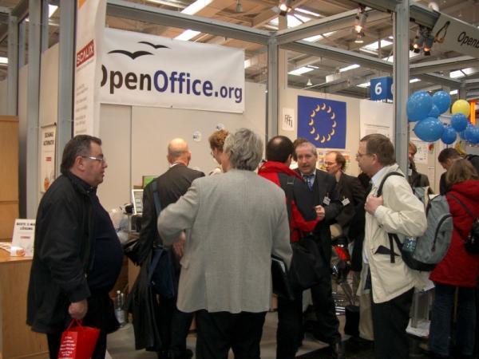
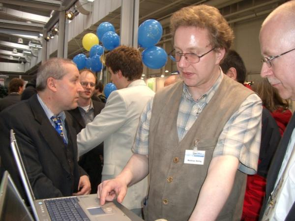

CeBIT 2005With the beta version of OpenOffice.org 2.0 in their pocket the team of de.OpenOffice.org had certainly to be present at the CeBIT 2005 in Hannover. From March 10th to March 16th 2005 the OpenOffice.org team demonstrated the innovations of the coming Major Release at the booth in the OpenBooth area of the LinuxPark and gave informations to the numerous visitors willingly. On three different platforms (Windows, Linux and MacOS) the version 1.1.4 - recommended for the productive employment - was presented as well as a view into the future of the version 2.0 was made possible. Thank you to the untiring team at the booth: Thomas Krumbein, Jacqueline Rahemipour, Mathias Roellig, Andreas Mantke, Andre Schnabel and Thomas Keup. As expected many questions of the visitors referred to the coming version and in particular the publication date and to the new data base module. The already available literature about OpenOffice.org was from great interest and as on the previous fairs the PrOOo-Box, too. Some visitors followed the call to support the German project team actively as a developer for the Mac-port or as an assistant with the beta tests. Many visitors brought very detailed technical questions concerning the separate modules, the compatibility to MS Office documents or concerning macros (or in general: API binding). Due to the brilliant booth crew almost no question remained unanswered. Beyond that there were many interesting discussions with enterprises, which already successfully use OpenOffice.org or have in mind to migrate. Most welcome were the visitors, who just wanted to say hello and make some compliments. There have been several of them every day. At the LinuxForum there have been two interesting lectures concerning OpenOffice.org on the schedule. On Saturday Mathias Roellig drew a comparison "OpenOffice.org vs. ACCESS", explained thereby the new data base module Base and migration possibilities from ACCESS to OpenOffice.org. On Sunday Jacqueline Rahemipour and Thomas Keup proceeded with "OpenOffice.org in the business use" and presented case studies, concrete scenarios in enterprises as well as migration strategies. You can find the lectures as well as further pictures of OpenOffice.org at the CeBIT 2005 here. The pictures have been made available to the project by Jacqueline Rahemipour. Outside the project the utilization is only allowed with the explicit permission of photographer and the shown persons. |
|